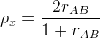

| テスト理論 |
| テスト理論 |
あるテストの項目を折半することでできる2つの部分テストの合計得点が、お互いに強平行測定を満たすとする。 このとき、式(36)より、この2つのテスト得点の間の相関係数は、これら部分テストの信頼性係数に等しい。
折半する前のもとのテストの信頼性係数は、Spearman-Brownの公式（式(42)）においてとしたものに、この部分テストの信頼性係数を代入して計算できる1。 つまり、部分テストの得点間の相関係数をとしたとき、元のテストの信頼性係数は、
|  | (53) |
となる。
このように、テストを折半することでできる部分テストの得点間の相関係数から、Spearman-Brownの公式を用いて信頼性係数を推定する方法を折半法という。 折半法では、再テスト法と異なり、1度テストを実施すれば信頼性に関する情報を得ることができる。
一方で、言うまでもなく、折半された部分テストが強平行測定を満たす保証はない。 また、項目を折半する方法は一意ではない。 例えば、奇数番目の項目と偶数番目の項目で折半して部分テストを作ることを奇偶法というが、これに限らずテストの前半後半で分割してもよい。 この場合、どういう基準で項目を折半したかによって結果が変わってきてしまうことになる。
Footnotes
| テスト理論 |